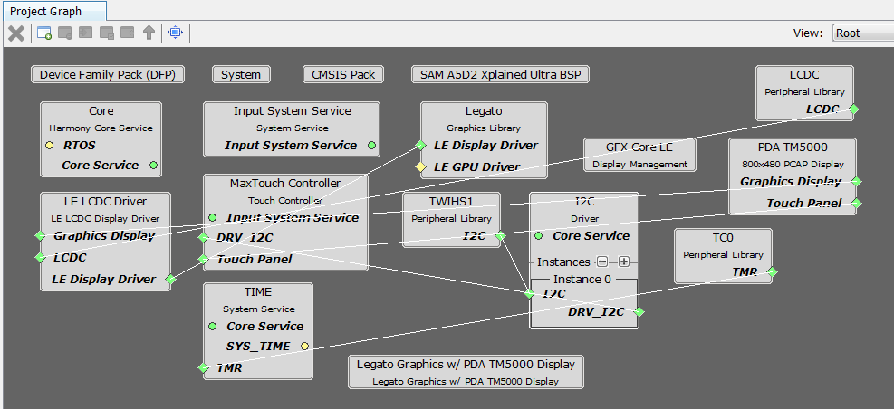

|
MPLAB® Harmony Graphics Suite
|
|
MPLAB® Harmony Graphics Suite
|

In this configuration, the Legato Graphics library renders the frame to a 32-bit frame buffer in external DDR. The LCDC display controller on the A5D2 is used to drive frame data from DDR to the display. 16-bit RGB565 frame buffer is stored in the internal SRAM.
User touch input on the display panel is received thru the PCAP capacitive touch controller, which sends a notification to the Touch Input Driver. The Touch Input Driver reads the touch information over I2C and sends the touch events to the Aria Graphics Library Task thru the Input System Service Task.

The Project Graph diagram below shows the Harmony components that are included in this application. Lines between components are drawn to satisfy components that depend on a capability that another component provides.
First, add the SAM A5D2 XPlained Ultra BSP into the project. Then, add Legato Graphics w/ PDA TM5000 Display Graphics Template component to the project if using a 4.3" WQVGA TM5000 display or the **Aria Graphics w/ PDA TM4301B Display** Graphics Template component to the project if using a 5" or 7" WVGA TM4301b display. The template will automatically add the components needed for a graphics project and resolve their dependencies and configure the pins needed to drive the external peripherals like the display and the touch controller.
The parent directory for this application is gfx/apps/aria_dashboard. To build this application, open the IAR project at: gfx/apps/aria_dashboard/firmware/aria_db_a5d2_xu_tm5000.X.
For more building information, see: Getting started with Harmony 3 on the SAMA5D2.
The following table lists configuration properties:
| Project Name | BSP Used | Graphics Template Used | Description |
|---|---|---|---|
| legato_qs_a5d2_xu_tm5000.X | SAM A5D2 Xplained Ultra | Graphics w/ PDA TM5000 Display | GFX on SAM A5D2 Xplained Ultra Board and PDA TM5000 WVGA Display |
**_NOTE:_** This application may contain custom code that is marked by the comments // START OF CUSTOM CODE ... and // END OF CUSTOM CODE. When using the MPLAB Harmony Configurator to regenerate the application code, use the "ALL" merging strategy and do not remove or replace the custom code.
Connect the ribbon cable from the display to the J16 connector on the back of the SAM 9x60 Evaluation Kit board.

When power-on is successful, the demonstration will display a similar menu to that shown in the following figure (different configurations may have slight variation in the screen aspect ratio):

When Make changes. Generate. Run. is touched, the button will toggle with each individual touch.

 1.8.18
1.8.18